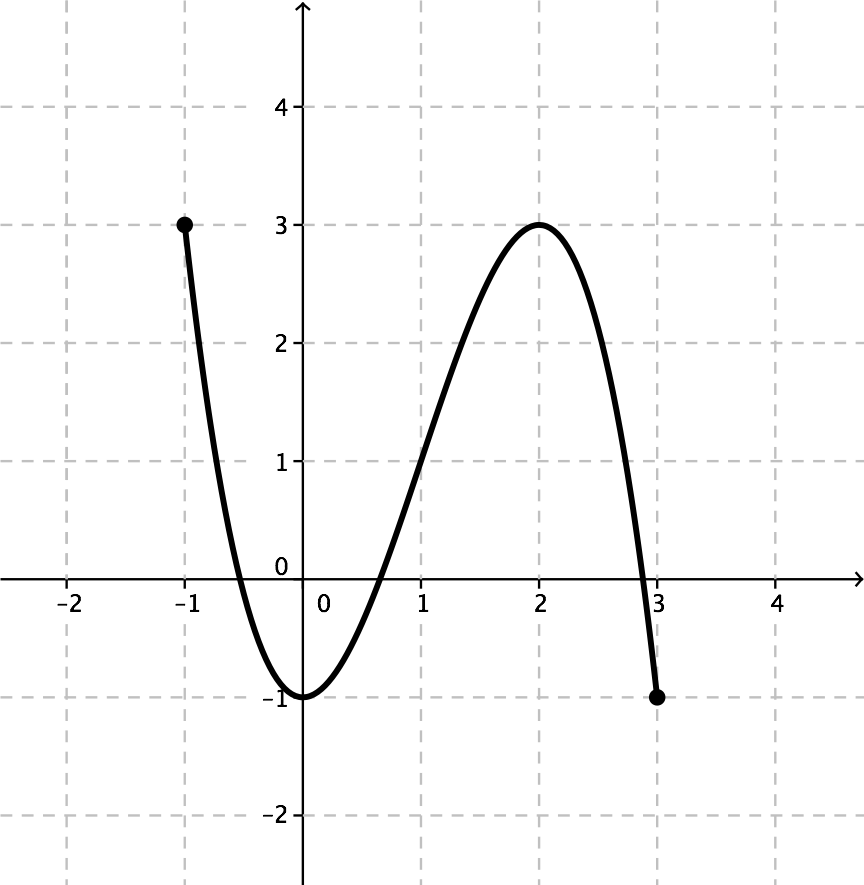

19. Rationell funktion
Vi börjar vårt äventyr med att undersöka rationella funktioner. Rationella funktioner är funktioner där vi i täljaren och nämnaren består av polynom. Eftersom vi har ett polynom i nämnaren betyder det att den rationella funktionen är definierad i alla punkter förutom nämnarens nollställen.
Rita funktionen \(f(x)=\dfrac{1}{x^2-1}\) och bestäm \(f(2)\).
När vi ritar funktioner för hand så behöver vi ett par punkter på funktionen. Dessa punkter får du lättast genom att lista ett par \(x\)-koordinater och sedan räkna ut motsvarande \(y\)-koordinat.
Lösning
Funktionen är definierad då nämnaren inte har värdet noll.
Vi får att
\(\begin{array}{rcl} x^2-4x+4 & \not= &0 \\ (x-2)^2 &\not= & 0 \\ x-2 &\not= & 0 \\ x & \not=&2 \\ \end{array}\)
Definitionsmängden är alltså alla reella tal utom 2.
Räknare, datorer, telefoner och webbsidor brukar inte klara av att rita grafen av funktioner där det finns hål. Funktionen \(f(x)=\dfrac{x^2-4}{x+2}\) ritas som \(g(x)=x-2\) fastän \(f(x)\) inte är definierad i punkten \(x=-2\). Det som händer är att räknare, datorer, telefoner och webbsidor förenklar och förkortar först om de kan och glömmer att bestämma punkter där funktionen inte är definierad.
Observera detta när du tar hjälp av räknare och räkneprogram!
Uppgifter
Svara på följande frågor utgående från grafen på bilden.

- Bestäm definitionsmängden.
\(-1\leq x \leq 3\).
- Bestäm \(f(1)\).
\(f(1)=1\)
- Bestäm funktionens största värde.
Största värdet är 3.
- Bestäm de punkter som ger funktionsvärdet 3.
Punkterna -1 och 2 ger funktionsvärdet 3.
- Bestäm definitionsmängden.
- Bestäm definitionsmängerna för funktionerna
- \(f(x)=\dfrac{1}{x+1}\)
Lös ekvationen \( x +1 =0 \). Vi kommer fram till alla reella tal förutom \(x=-1\).
- \(f(x)=\dfrac{2}{x^2-9}\)
Funktionen är definierad för alla reella tal förutom de tal som uppfyller villkoret \( x^2 - 9 = 0\).
Vi får att definitionsmängden är alla reella tal förutom \(x=\pm3\).
- \(f(x)=\dfrac{2-x}{4-x^2}\)
Funktionen är definierad för alla reella tal förutom de som uppfyller villkoret \( 4-x^2 = 0\).
Vi kommer fram till att definitionsmängden är alla reella tal förutom \(x=\pm2\).
- \(f(x)=\dfrac{3-x}{x^2-x-2}\)
Funktionen är definierad för alla reella tal för utom dem som uppfyller villkoret \( x^2-x-2 = 0 \). Då vi löser ekvationen kommer vi fram till att definitionsmängden är alla reella tal förutom \(x=-1\) och \(x=2\).
- \(f(x)=\dfrac{1}{x+1}\)
- Funktionen \(f(x)=\dfrac{x}{x-3}\) är inte definierad i punkten \(x=3\). Hur ritar din räknare grafen av funktionen? Hur borde din räknare rita grafen?
Du borde få något i stil med

Här är inget konstigt.
- Funktionen \(f(x)=\dfrac{x+3}{x^2-9}\) är inte definierad då \(x=\pm 3\). Hur ritar din räknare grafen av funktionen? Hur borde din räknare rita grafen?
Räknarna klarar inte av nollstället \(x=-3\) och därför ritar de som

Observera att räknaren inte alltid vet exakt allt. Var smartare än den!
- Bestäm definitionsmängden för följande funktioner.
- \( \dfrac{5c-7}{x(x+3)} \)
Nämnaren får inte ha värdet noll.
Alltså \( x \not= 0 \) eller \( x\not= -3 \).
Definitionsmängden är alla reella tal förutom 0 och -3.
- \( \dfrac{3x}{x^2-1} \)
Nämnaren får inte ha värdet noll.
Alltså \( x \not= \pm 1 \).
Definitionsmängden är alla reella tal förutom \( \pm1 \).
- \( \dfrac{3x}{x^2+1} \)
Nämnaren får inte ha värdet noll.
\( x^2 \geq 0\), alltså är nämnaren alltid positiv.
Definitionsmängden är alla reella tal.
- \( \dfrac{5c-7}{x(x+3)} \)
- Bestäm definitionsmängden för följande funktioner.
- \( \dfrac{x}{x+3} - \dfrac{2x-8}{4x+1} \)
\( \dfrac{x}{x+3} \) är definierad i alla reella tal förutom då \( x+3 = 0 \), alltså \( x = -3 \).
\( - \dfrac{2x-8}{4x+1} \) är definierad i alla reella tal förutom då \( 4x+1=0 \), alltså då \( x = -\dfrac{1}{4} \).
Uttrycket är definierat i alla reella tal förutom då \( x = -3 \) eller då \( x =-\dfrac{1}{4} \).
- \( 17x - \dfrac{x+3}{6x} + \dfrac{x-3}{x^2-25} \)
\( 17x \) är definierad för alla reella tal.
\( - \dfrac{x+3}{6x} \) är definierad för alla reella tal utom de som uppfyller villkoret \( 6x = 0 \). Alltså \( x = 0 \).
\( \dfrac{x-3}{x^2-25} \) är definierad för alla reella tal förutom i nämnarens nollställe, \( x^2-25 = 0 \), alltså då \( x = \pm 5 \).
Uttrycket är definierat för alla reella tal förutom \( x = 0 \) och \( x = \pm 5 \).
- \( \dfrac{4x+7}{x^3+25x^2} \)
Uttrycket är definierat för alla reella tal förutom de tal som är nämnarens nollställen. Vi löser ekvationen \( x^3 + 25x^2 = 0 \) och kommer fram till \( x = 0 \) och \( x = -25 \).
- \( \dfrac{x}{x+3} - \dfrac{2x-8}{4x+1} \)
- Bestäm definitionsmängden för funktionen \( \dfrac{5x^2-10x}{x-2} \). Förenkla uttrycket. Bestäm definitionsmängden för den förenklade funktionen?
Definitionsmängden för den ursprungliga funktionen är alla reella tal förutom \( x = 2 \).
Den förenklade funktionen är \( \dfrac{5x(x-2)}{x-2} = 5x \). Dess definitionsmängd är alla reella tal.
- Fundera på följande tillsammans med en kurskamrat.
- Kan man säga att grafen av dessa funktioner är vackra?
- Vilken graf tycker du att är vackrast? Varför?
- Kan man säga att någon matematisk funktion är ett konstverk?

Källa: Filosofoidaan matematiikasta ja luonnontieteistä; Daniel, Lafourtune, Pallascio, Sykes